初心者（がやる）セッション
SapporoR 9th
水野 君平
2019年3月2日
自己紹介
はじめまして
- 水野君平

- 北大教育学院（not文学部）D3
- 専門：教育心理学
- R歴：5年（ただしあまり使わない）
本セッションの目的
- @uranokenさんにRを使わせる（らしい）

Rとは
統計環境ソフトR
- 分析できる
- データの可視化（グラフ）ができる
- スライドをつくれる
- Youtubeを観れる
- 今日は心理調査屋流？のRの使い方
- 統計ソフトとしてのR
Rの利点
- 無料であること（SPSSは高い、Mplusは安い）
- 拡張性が高い（他ソフトはお着せ）
- CUI（プログラム不得意なので少し使いにくい）
- コピーアンドペースト（）で操作できる利点
Rの特徴
Rを使って何をするのか
- 高価な有償ソフトを使わなくても研究できる
- HADがるからいいじゃん
- JASPがあるからいいじゃん
- かゆいところに手が届く分析が可能
Rstudeio
- あると便利、というかほぼマストなもの
- 高機能システムキッチン
- 生Rは使いにくい（地獄）
- 一部GUIなので便利（GUIに慣れているので）
- コードをサジェストしてくれる
- もちろん無償
Rstudioの画面

さっそくやってみよう
- Rのインストール
- cran.r-project.org
- RStudioのインストール
- www.rstudio.com
Rstudioの使い方
まずやること
- Rを自分好みにする
- ToolsからGrobal Optionsへ

Groval Options

Appearance
- 文字と背景の色でイキろう

Panel layout
- 使いやすいようにパネルの位置を変更することも良い
- スクリプトとコンソールは上など

プロジェクトをつくる！
- プロジェクトを作成する
- フォルダみたいなもの
- ここに全てを置く

実際の作成手順
- fileからnew project
- New Directory
- Empty Project
- Directoryの名前とパスは適当に
注意点
- パスに日本語が入るとエラーを吐く場合がある
- 特にユーザー名を日本語にしている場合は絶望的
- 自分は一度ユーザー設定を作り直した
ちがうかも
 - らしい
- らしいスクリプトを開く

ででーん

スクリプトとは？
- メモみたいなもの（知らんけど）
- 生Rだとコンソールに直打ち込み（地獄）
- スクリプトだとテキストメモを使う必要もない
簡単な計算をする
1+1## [1] 2変数を扱う
x<- 1 + 1 x## [1] 2変数計算も可
x * 10## [1] 20x ^ 2## [1] 4sqrt( x )## [1] 1.414214y <- x ^ 2 z <- x * 10 sum( y , z )## [1] 24データファイルで分析
データファイルを使う準備
- データファイルはコンマ区切りのやつ（csv）
- .excelや.savの拡張子でも読み込める（らしい）
- Excelから作成するときには・・・
- ファイルから名前を付けて保存
- CSV (コンマ区切り) (.csv)で保存
- 警告を何度か踏むが無視
csv以外を読み込むときには
- Import Datasetを押す

データセットの説明
データを読み込む
- ファイル名はdata.csv
- 1行目は変数名 (英数字、カッコを使わないほうがいい)
- 欠損値はピリオド
- 中学校46学級への調査データを共分散行列から再び乱数で作成したもの
- HADでやりました
- なので不自然な値がある
- 学年、学級、性別もランダムに再割当て（手作業）
どんなデータなのか
- id……生徒のID
- class……学級のナンバリング
- grade……学年
- sex……0=男子、1=女子
- その他質問項目
学級風土
- zikokaizi
- 「自然な自己開示」という学級風土尺度の下位尺度
- 1……個人的な問題を安心して話せる
- 2……自分たちの気持ちを気軽に言い合える
- 3……自分たちの気持ちを率直に先生にみせる
学校適応感
- igokochi
- 「居心地の良さの感覚」という学校適応感尺度の下位尺度
- 1……周囲に溶け込めている
- 2……ありのままの自分を出せている
- 3……周りの人と楽しい時間を過ごせている
- 4……自由に話せる雰囲気を感じている
- 5……自分と周りがかみ合っている
データを読み込んで分析する
データ読み込み
dat = read.csv("dataset.csv", na.strings = ".", head=T, row.names=1)- na.strings= " . " で . を NA に変更
- row.namesで先頭列をidと認識させる
まずは
- summary()を用いる
- データフレームの全ての変数の最小値、第1四分位(25%)、中央値、平均値、第3四分位(75%)、最大値が表示される。
- 乱数データなので変な値が出るが気にしないでください
summary(dat)## class grade sex zikokaizi1 ## Min. : 1.00 Min. :1.000 Min. :0.0000 Min. :-1.025 ## 1st Qu.:12.00 1st Qu.:1.000 1st Qu.:0.0000 1st Qu.: 2.207 ## Median :23.00 Median :2.000 Median :1.0000 Median : 3.125 ## Mean :23.16 Mean :2.019 Mean :0.5503 Mean : 3.101 ## 3rd Qu.:35.00 3rd Qu.:3.000 3rd Qu.:1.0000 3rd Qu.: 3.937 ## Max. :46.00 Max. :3.000 Max. :1.0000 Max. : 7.573 ## NA's :5 ## zikokaizi2 zikokaizi3 igokochi1 igokochi2 ## Min. :-0.5137 Min. :-0.7089 Min. :-0.1827 Min. :-0.5368 ## 1st Qu.: 2.5293 1st Qu.: 2.3409 1st Qu.: 2.9950 1st Qu.: 2.6355 ## Median : 3.4322 Median : 3.2326 Median : 3.6417 Median : 3.4315 ## Mean : 3.4002 Mean : 3.2021 Mean : 3.6664 Mean : 3.4255 ## 3rd Qu.: 4.2295 3rd Qu.: 4.0573 3rd Qu.: 4.3452 3rd Qu.: 4.2637 ## Max. : 8.1928 Max. : 7.3596 Max. : 6.9891 Max. : 7.0810 ## NA's :2 NA's :1 ## igokochi3 igokochi4 igokochi5 ## Min. :0.531 Min. :-0.1365 Min. :-0.07205 ## 1st Qu.:3.324 1st Qu.: 3.0179 1st Qu.: 2.85282 ## Median :4.013 Median : 3.8398 Median : 3.64251 ## Mean :3.994 Mean : 3.7679 Mean : 3.60712 ## 3rd Qu.:4.679 3rd Qu.: 4.5045 3rd Qu.: 4.32881 ## Max. :7.442 Max. : 7.3863 Max. : 6.76755 ## NA's :2 NA's :1 NA's :1性別と学年の内訳を確認する
- table()を使う
- データフレーム$変数、でどこのどの変数かを指定
table(dat$sex, dat$grade)## ## 1 2 3 ## 0 199 211 225 ## 1 258 258 261- わかりずら・・・
データ変換
- 性別、学年をカテゴリカル変数にする
- sex=0が男子、1が女子
- gradeは数字が学年
dat$sex2<-factor(dat$sex, labels=list("boy", "girl")) dat$grade2<-factor(dat$grade, labels=list("1st", "2nd", "3rd"))もう一度table関数を実行
table(dat$sex2, dat$grade2)## ## 1st 2nd 3rd ## boy 199 211 225 ## girl 258 258 261- イイネ
変数の計算とデータセットの書き出し
変数の集計
- 下位尺度の変数をまとめる
- 新しくデータセットをつくる
dat$zikokaizi<- (dat$zikokaizi1+dat$zikokaizi2+ dat$zikokaizi3)/3 dat$igokochi<- (dat$igokochi1+dat$igokochi2+dat$igokochi3+ dat$igokochi4+dat$igokochi5)/5特定の条件でデータを抜き出す
- 3年生のデータのみを取り出す
san <- subset(dat, grade2=="3rd") head(san)## class grade sex zikokaizi1 zikokaizi2 zikokaizi3 igokochi1 igokochi2 ## 306 11 3 0 2.426850 2.289442 3.809834 3.558017 2.318262 ## 307 11 3 0 3.084496 5.212387 4.056563 3.239719 4.375513 ## 308 11 3 0 3.293465 2.332457 3.097077 3.466792 2.435147 ## 309 11 3 0 2.868459 3.383862 3.175218 4.128947 3.252894 ## 310 11 3 1 4.194919 4.163725 4.478951 4.781364 4.686919 ## 311 11 3 0 1.308495 1.087232 2.546142 1.131737 2.416010 ## igokochi3 igokochi4 igokochi5 sex2 grade2 zikokaizi igokochi ## 306 3.444321 2.933151 2.458916 boy 3rd 2.842042 2.942533 ## 307 3.664370 4.941441 4.357842 boy 3rd 4.117815 4.115777 ## 308 3.976130 2.908981 3.968420 boy 3rd 2.907666 3.351094 ## 309 5.032416 3.685323 4.416290 boy 3rd 3.142513 4.103174 ## 310 5.617944 3.198245 3.760299 girl 3rd 4.279199 4.408954 ## 311 3.297775 1.422641 1.933586 boy 3rd 1.647290 2.040350複数の列を取り出す
dat2<- dat[,c("class", "grade2", "sex2", "zikokaizi", "igokochi")]他のやり方
- subset()でもできる
dat3 <- subset(dat, select=c(class, grade2, sex2, zikokaizi, igokochi))データセットへの書き出し
- Tだとidが一番左端に出力される
write.csv(dat2, "dataset2.csv", row.names=F)データの可視化
かんたんヒストグラム
- hist()を使う
hist(dat2$igokochi)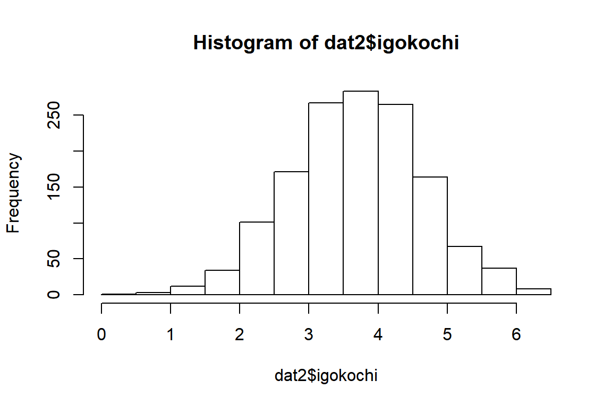
かんたん棒グラフ
- tapply(変数, 群わけ, みるもの)とbarplot()を使う
bar <- tapply(dat2$igokochi, dat2$sex2, mean, na.rm=T) barplot(bar)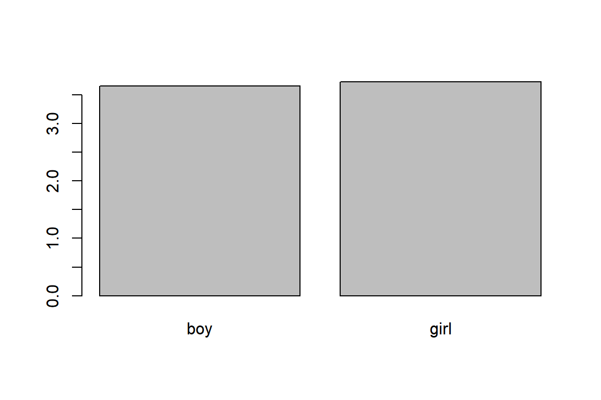
かんたん散布図
- plot(x軸, y軸)
plot(dat2$zikokaizi, dat2$igokochi)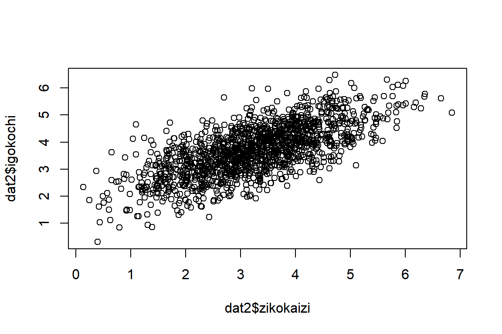
ヒストグラムをきれいに
- ggplot2を使う
library(ggplot2) ggplot(dat2, aes(x = igokochi))+ geom_histogram(na.rm=T, bins=30)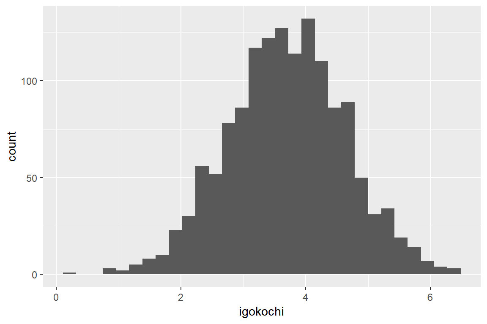
ヒストグラムを重ねる
- fill=“white”で塗りつぶしを白
- colour=“black”で枠の色を黒
ggplot(dat2, aes(x = igokochi, y=..density..))+ geom_histogram(fill="white", colour="black", na.rm=T, bins=30)+ geom_density(na.rm=T)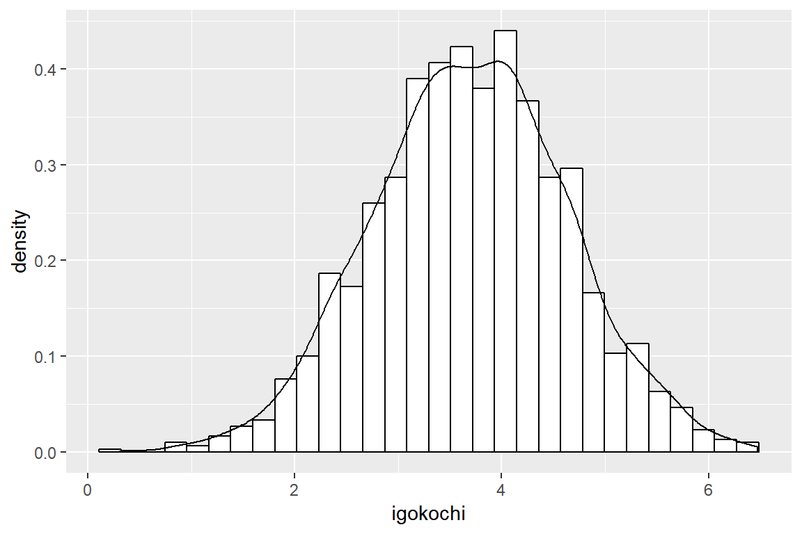
ヒストグラムを学年でわける
- 明らかに数がおかしい
ggplot(dat2, aes(x = igokochi, fill=grade2))+ geom_histogram(bins=20, na.rm=T)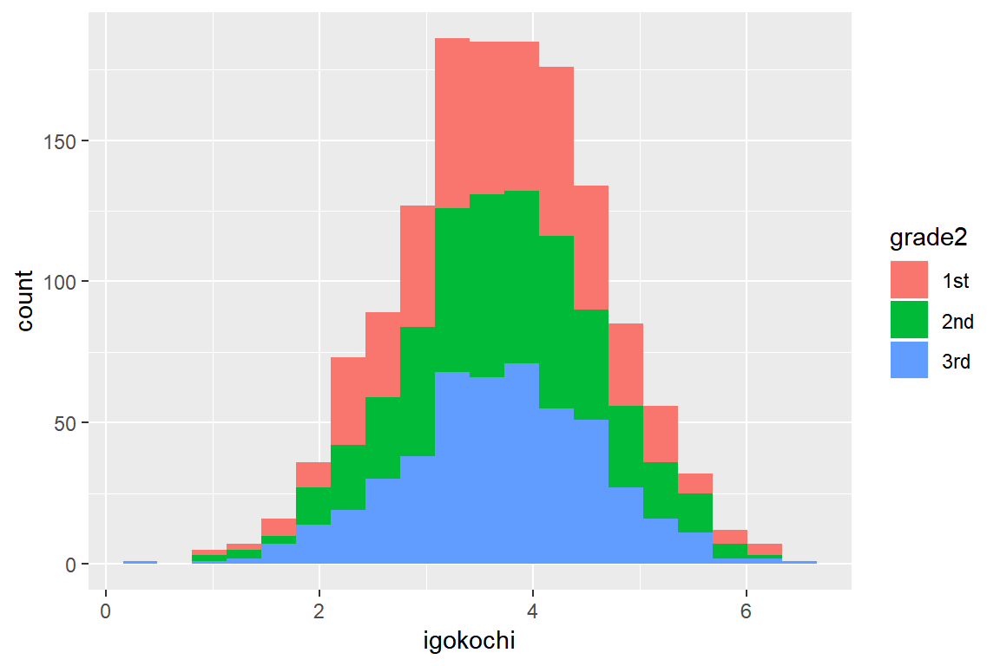
ヒストグラムを学年でわける
- position = “identity”で重なるように指示
- alphaで透明度を指定
ggplot(dat2, aes(x = igokochi, fill=grade2))+ geom_histogram(bins=20, position = "identity", na.rm=T, alpha = 0.7)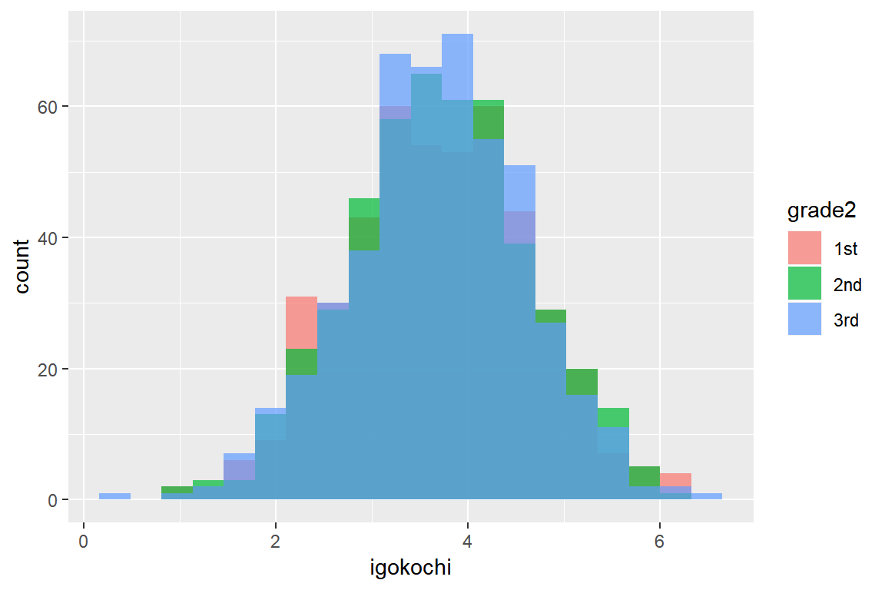
棒グラフを学年でわける
- stat=“identity”で平均
- position=“dodge”で隣接だが…
ggplot(dat2, aes(x = grade2,y = igokochi))+ geom_bar(stat="identity",position = "dodge", na.rm=T)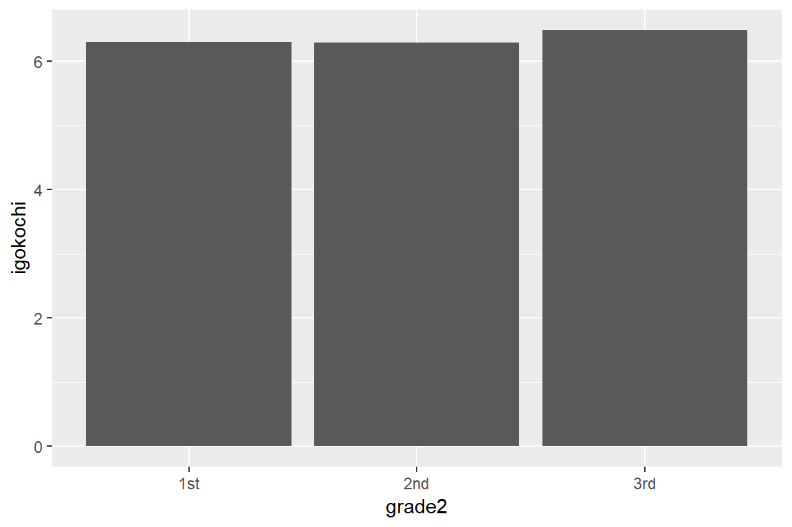
棒グラフを性別と学年でわける
ggplot(dat2, aes(x = grade2,y = igokochi, fill=sex2))+ geom_bar(stat="identity",position = "dodge", na.rm=T)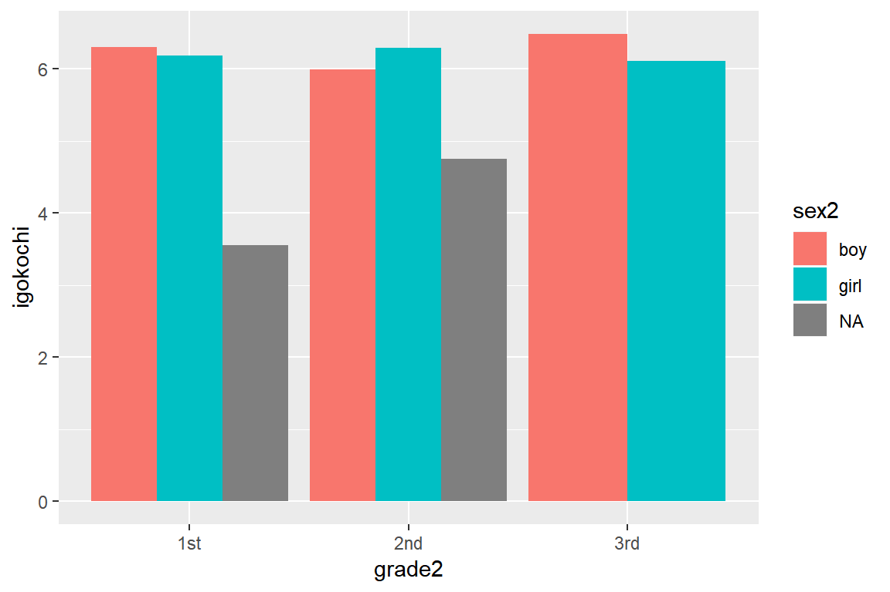
scaleほげを入れる必要があるらしい
- しかし3年生の棒グラフの幅がおかしい
ggplot(dat2, aes(x = grade2,y = igokochi, fill=sex2))+ geom_bar(stat="identity",position = "dodge", na.rm=T)+ scale_fill_discrete(na.translate = F)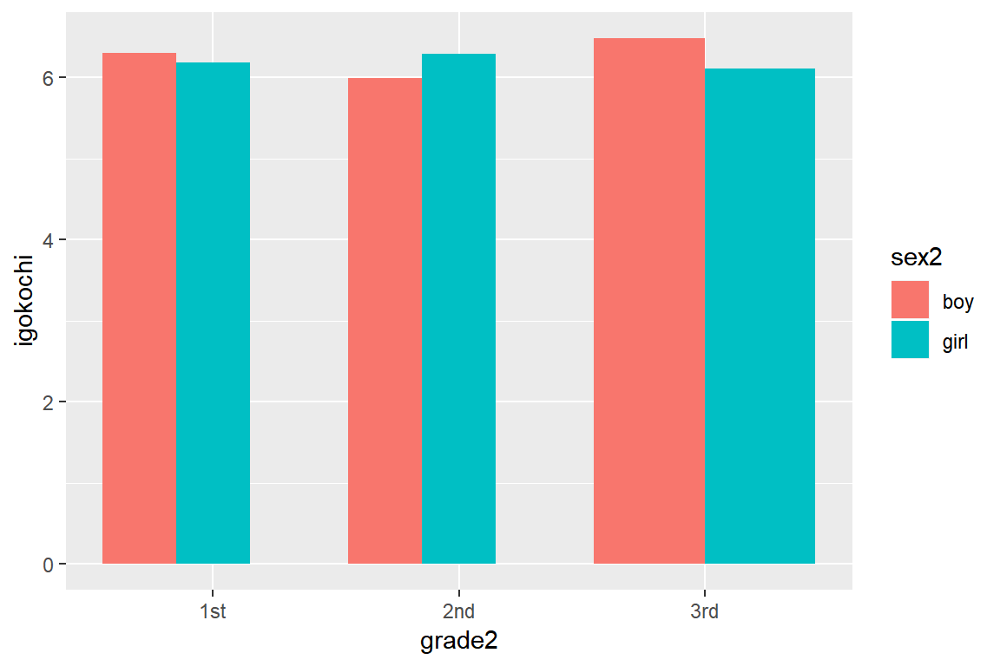
ラベルを日本語に
- labs(x=“”)で各軸や群の内容を付け足す
- グラフ隣接が嫌ならposition_dodge(width = 0.5)
ggplot(dat2, aes(x = grade2,y = igokochi, fill=sex2))+ geom_bar(stat="identity",position = "dodge", na.rm=T)+ scale_fill_discrete(na.translate = F)+ labs(x="学年", y="居心地の良さの感覚", fill="性別")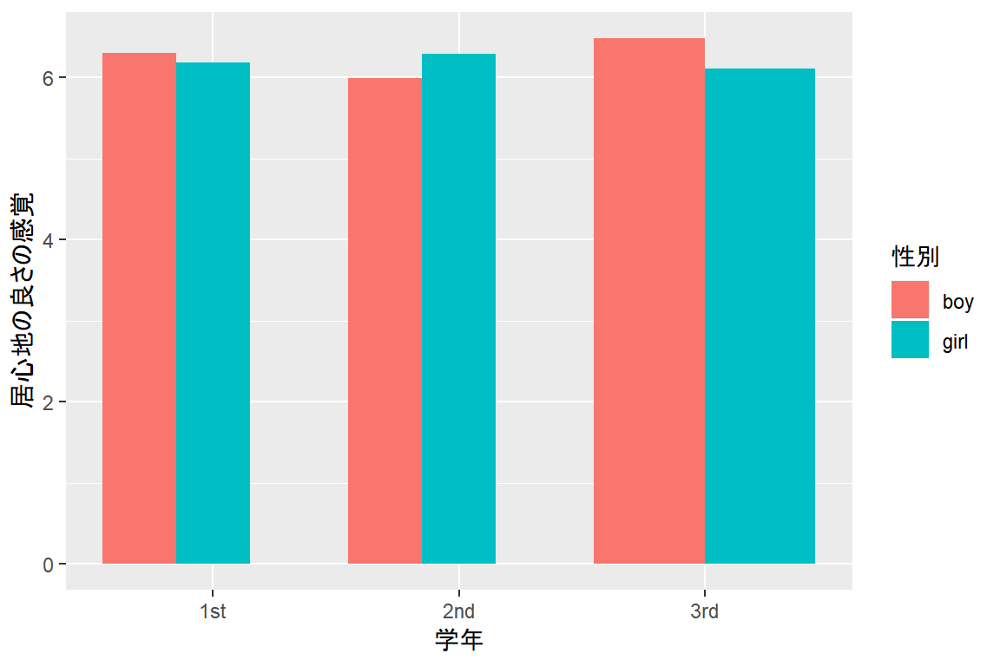
散布図
ggplot(dat2, aes(x=zikokaizi, y=igokochi))+ geom_point(na.rm=T)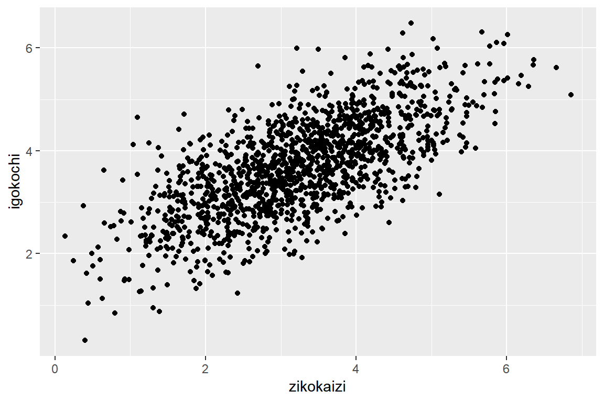
性別ごとの散布図
- 性別ごとに色を付け回帰直線を引く（95%CI付き）
ggplot( dat2, aes (x = zikokaizi, y = igokochi ) )+ geom_point( aes ( colour = sex2 ), na.rm=T ) + stat_smooth( method ="lm", na.rm=T )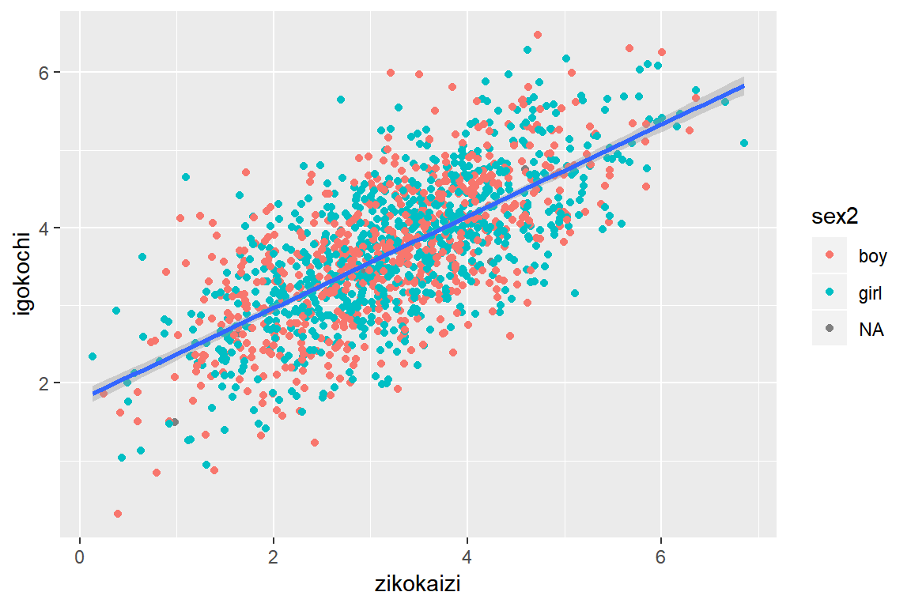
学年ごとの散布図
- 学年ごとに色を付け回帰直線を引く（95%CI付き）
ggplot( dat2, aes (x = zikokaizi, y = igokochi ) )+ geom_point( aes ( colour = grade2 ), na.rm=T ) + stat_smooth( method ="lm", na.rm=T )もっと分析していく
相関を求める
cor.test( dat2$zikokaiz , dat2$igokochi )## ## Pearson's product-moment correlation ## ## data: dat2$zikokaiz and dat2$igokochi ## t = 36.288, df = 1409, p-value < 2.2e-16 ## alternative hypothesis: true correlation is not equal to 0 ## 95 percent confidence interval: ## 0.6670563 0.7210780 ## sample estimates: ## cor ## 0.6950469総当たりで相関を求める
- data.frame(変数)で特定の変数を抜き出せる
library(psych) cordat <- data.frame(dat$sex,dat$igokochi, dat$zikokaizi) corr.test(cordat)## Call:corr.test(x = cordat) ## Correlation matrix ## dat.sex dat.igokochi dat.zikokaizi ## dat.sex 1.00 0.04 0.04 ## dat.igokochi 0.04 1.00 0.70 ## dat.zikokaizi 0.04 0.70 1.00 ## Sample Size ## dat.sex dat.igokochi dat.zikokaizi ## dat.sex 1412 1408 1410 ## dat.igokochi 1408 1413 1411 ## dat.zikokaizi 1410 1411 1415 ## Probability values (Entries above the diagonal are adjusted for multiple tests.) ## dat.sex dat.igokochi dat.zikokaizi ## dat.sex 0.00 0.21 0.21 ## dat.igokochi 0.12 0.00 0.00 ## dat.zikokaizi 0.10 0.00 0.00 ## ## To see confidence intervals of the correlations, print with the short=FALSE optionだいたい全部やってくれるかっこいいヤツ
- na.omitで欠損値を無視
- dat2[, 3 : 5 ]で3~5列目の変数を使うことを指示
library(GGally) ggpairs(na.omit( dat2[ , 3 : 5 ] ), aes_string( colour = "sex2", alpha = 0.5 ) )だいたい全部やってくれる
library(GGally) ggpairs(na.omit( dat2[ , 3 : 5 ] ), aes_string( colour = "sex2", alpha = 0.5 ) )## `stat_bin()` using `bins = 30`. Pick better value with `binwidth`. ## `stat_bin()` using `bins = 30`. Pick better value with `binwidth`.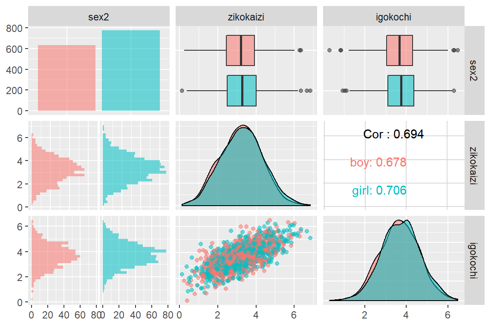
平均値差の検定
- t.test(従属変数, 群分け変数)
- デフォルトでwelch検定（これでいい）
t.test( dat2$igokochi~ dat2$sex2 )## ## Welch Two Sample t-test ## ## data: dat2$igokochi by dat2$sex2 ## t = -1.5472, df = 1341.6, p-value = 0.1221 ## alternative hypothesis: true difference in means is not equal to 0 ## 95 percent confidence interval: ## -0.17626779 0.02082457 ## sample estimates: ## mean in group boy mean in group girl ## 3.652626 3.730348効果量を出す
- compute.esを使う
- langtest.jpなどのツールに投げる
- 関数を作る
関数
- daihiko_t関数（Sappro.R 8thより）
daihiko_t<-function(x,y,paired=TRUE) { if (paired) { d<-data.frame(x,y) d<-subset(d,complete.cases(d)) rt<-t.test(d$x,d$y,paired=TRUE) rsd<-c(sd(d$x,na.rm=T),sd(d$y,na.rm=T)) cohend<-abs(mean(d$x-d$y)/(sd(d$x-d$y)/sqrt(2*(1-cor(d$x,d$y))))) return(list(meanx=mean(d$x),meany=mean(d$y),SD=rsd,t=rt,cohend=cohend)) } else { rt<-t.test(x~y) rsd<-tapply(x,y,sd,na.rm=TRUE) rt1<-table(y,x) rt2<-apply(rt1,1,sum) cohend<-(rt$estimate[1]-rt$estimate[2])/sqrt(((rt2[1]-1)*rsd[1]^2+(rt2[2]-1)*rsd[2]^2)/(rt2[1]+rt2[2]-2)) cohend<-unname(cohend) return(list(N=rt2,SD=rsd,t=rt,cohend=cohend)) } }回帰分析
- lm(従属変数~独立変数, データセット)
- 超簡単
result1<- lm( igokochi ~ sex2 + grade2 + zikokaizi, dat2 ) summary(result1)## ## Call: ## lm(formula = igokochi ~ sex2 + grade2 + zikokaizi, data = dat2) ## ## Residuals: ## Min 1Q Median 3Q Max ## -2.00456 -0.45062 -0.01157 0.44572 2.31819 ## ## Coefficients: ## Estimate Std. Error t value Pr(>|t|) ## (Intercept) 1.77489 0.06409 27.692 <2e-16 *** ## sex2girl 0.02235 0.03624 0.617 0.538 ## grade22nd 0.02646 0.04438 0.596 0.551 ## grade23rd -0.03506 0.04415 -0.794 0.427 ## zikokaizi 0.59050 0.01638 36.043 <2e-16 *** ## --- ## Signif. codes: 0 '***' 0.001 '**' 0.01 '*' 0.05 '.' 0.1 ' ' 1 ## ## Residual standard error: 0.6751 on 1401 degrees of freedom ## (11 observations deleted due to missingness) ## Multiple R-squared: 0.4821, Adjusted R-squared: 0.4806 ## F-statistic: 326 on 4 and 1401 DF, p-value: < 2.2e-16標準化係数を出す
- 標準化係数とseを出す
- あらかじめ標準化しなくていいので超便利
library(betas) betas.lm(result1)## beta se.beta ## sex2girl 0.01187029 0.01924971 ## grade22nd 0.01332170 0.02234484 ## grade23rd -0.01775452 0.02235478 ## zikokaizi 0.69408026 0.01925700研究関心に立ち戻ってもっともっと分析
学級風土と生徒の学校適応感の関連
- 学級風土（雰囲気）と生徒の学校への適応との関係は？
- あくまでも個人の回答なので変数を作成しなければいけない
- 個人（風土の認知）
- 学級（認知の平均は学級の風土）
- 学級と個人の相互作用（風土認知の差、環境と個人の相性）
個人の風土の認知にしかならないので学級平均値を作成する
- 学級平均と学級標準偏差の作成
- tapply(変数, 計算するカテゴリ単位, 計算するもの)
- [ as.character( ) ]でカッコ内の単位で結果を返してくれる
dat2$zikokaizi_m <- tapply( dat2$zikokaizi, dat2$class, mean, na.rm=T )[ as.character( dat2$class ) ] dat2$zikokaizi_sd <- tapply( dat2$zikokaizi, dat2$class, sd, na.rm=T )[ as.character( dat2$class ) ]個人レベルの変数をいじる
- 生徒個人の得点を学級平均で中心化
dat2$zikokaizi_i <- dat2$zikokaizi - dat2$zikokaizi_m学級レベルの変数をいじる
- 学級レベルの変数は全体平均で中心化
dat2$zikokaizi_mc <- dat2$zikokaizi_m - mean( dat2$zikokaizi_m, na.rm=T ) dat2$zikokaizi_sdc <- dat2$zikokaizi_sd - mean( dat2$zikokaizi_sd, na.rm=T )階層線形モデルで分析する
- 基本的にはlm()と同様
- 交互作用を含む場合は*で変数をくっつける
- (傾きの変量効果|グループ)
- (1|class)だと切片のみの変量効果
library(lmerTest) result2 <- lmer( igokochi ~ sex2 + grade2+ zikokaizi_i*zikokaizi_mc + zikokaizi_sdc + ( zikokaizi_i|class ) , REML = F, data = dat2 ) summary(result2)## Linear mixed model fit by maximum likelihood . t-tests use ## Satterthwaite's method [lmerModLmerTest] ## Formula: ## igokochi ~ sex2 + grade2 + zikokaizi_i * zikokaizi_mc + zikokaizi_sdc + ## (zikokaizi_i | class) ## Data: dat2 ## ## AIC BIC logLik deviance df.resid ## 2898.2 2961.1 -1437.1 2874.2 1394 ## ## Scaled residuals: ## Min 1Q Median 3Q Max ## -2.9525 -0.6520 -0.0100 0.6659 3.4927 ## ## Random effects: ## Groups Name Variance Std.Dev. Corr ## class (Intercept) 0.001176 0.03430 ## zikokaizi_i 0.005693 0.07545 -1.00 ## Residual 0.445902 0.66776 ## Number of obs: 1406, groups: class, 46 ## ## Fixed effects: ## Estimate Std. Error df t value Pr(>|t|) ## (Intercept) 3.68434 0.03853 483.30000 95.629 < 2e-16 ## sex2girl 0.02438 0.03597 1386.90000 0.678 0.498 ## grade22nd 0.02604 0.04540 342.90000 0.574 0.567 ## grade23rd -0.03550 0.04715 330.60000 -0.753 0.452 ## zikokaizi_i 0.58801 0.01998 51.30000 29.432 < 2e-16 ## zikokaizi_mc 0.63992 0.09649 183.00000 6.632 3.62e-10 ## zikokaizi_sdc 0.02247 0.15419 305.40000 0.146 0.884 ## zikokaizi_i:zikokaizi_mc 0.06964 0.10249 50.40000 0.679 0.500 ## ## (Intercept) *** ## sex2girl ## grade22nd ## grade23rd ## zikokaizi_i *** ## zikokaizi_mc *** ## zikokaizi_sdc ## zikokaizi_i:zikokaizi_mc ## --- ## Signif. codes: 0 '***' 0.001 '**' 0.01 '*' 0.05 '.' 0.1 ' ' 1 ## ## Correlation of Fixed Effects: ## (Intr) sx2grl grd22n grd23r zikkz_ zkkz_m zkkz_s ## sex2girl -0.525 ## grade22nd -0.609 0.009 ## grade23rd -0.624 0.015 0.507 ## zikokaizi_i -0.051 -0.038 -0.004 -0.007 ## zikokaiz_mc 0.037 0.000 0.043 -0.126 -0.002 ## zikokaz_sdc -0.159 -0.009 0.115 0.284 -0.021 -0.006 ## zkkz_:zkkz_ -0.004 0.010 -0.002 -0.003 0.012 -0.151 -0.002Enjoy
宣伝
- 大学院生FC型クラウドファンディングやってます

（僕が）質問（する）コーナー
- projectはdropboxでPC間で共有していたが片方のPCから画像を貼り付けられない
- パスの問題？
- パスの問題？
- テキストにアニメーションをつけれるのか
- コード内でコメントアウトを使えない
- プロジェクトを作成する
- 文字と背景の色でイキろう